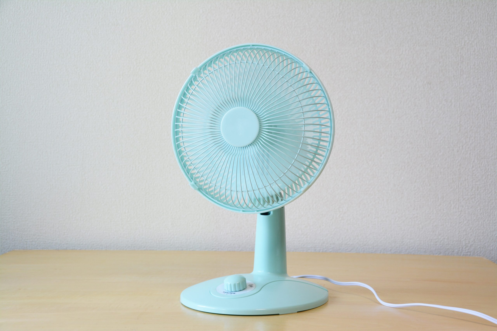
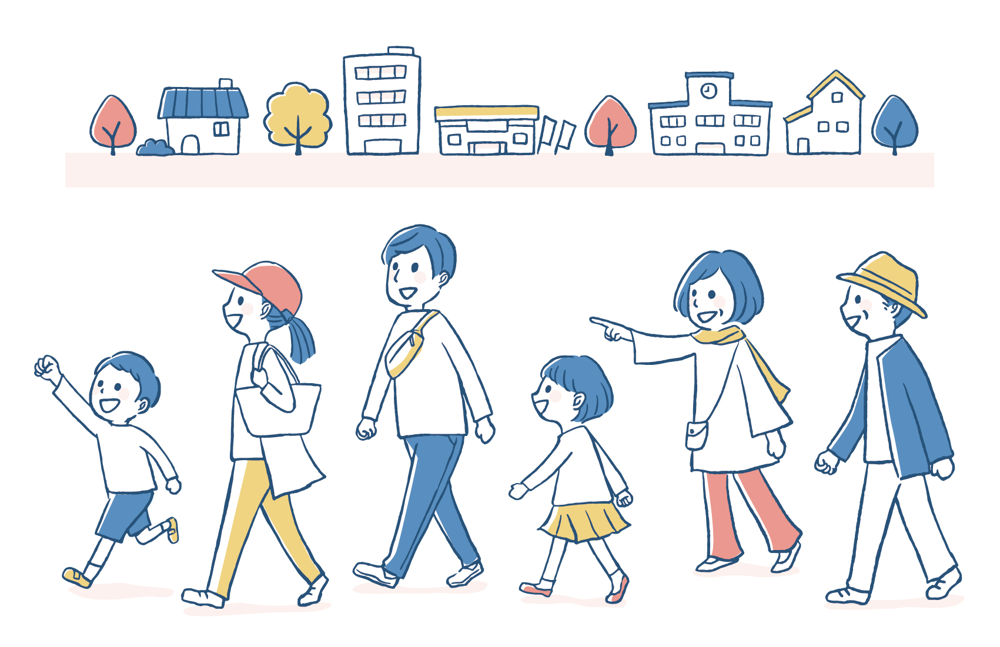

【2023年版】おすすめの手軽に持ち運べる省エネ扇風機5選!!!

公開日 2023/08/08
いよいよ気温も上がってきてきましたね...。今年は電気代も大幅に上がってしまったので、エアコンを気軽に使うことができない!そんな人におすすめな手持ち扇風機を5個紹介しちゃいますのでぜひ最後まで見てくれると嬉しいです!
もくじ
本記事ではエアコン代を節約したい！熱中症対策をしたい！などの方に向けておすすめの商品を紹介していきます！
山善 YAMAZEN YLT-AG30E 羽根径30cm 首ふり リビングファン

シンプルで安くて使いやすい扇風機
値段が安い電化製品って心配になってしまいますよね。でも山善の扇風機のなら安心です！組み立てからお手入れも楽々にできてしまうので時間のない人でも綺麗に使うことができます！
また一日八時間扇風機を使うとしてそれを1ヶ月間続けてもなんと電気代はおよそ283円なんです！1日平均9.4円で使うことができちゃいます！とても省エネですね！
さらに窓川におくことによって窓が一つしかない部屋など部屋に空気が溜まってしまうような場所でも効率よく換気できるのがおすすめです！
楽天市場で見る >
アイリスオーヤマ タワーファン メカ式 TWF-M73

静かな扇風機をインテリア感覚でおける！
上記の写真でもわかる通りでとてもおしゃれです。どんな部屋にも自然に溶け込んでしまうようなデザインをしています！
そして立体送風であるため風を縦と横に送ることができます。そのおかげで体全体で風を感じることができます。また左右にスイングするので部屋全体に風を行き渡らせることができるのです涼しい部屋を作ることができます。
さらに特徴的なのがとても静かなことです。どれくらい静かかというと図書館より静かなんです！なので寝ている時につけていても扇風機の音を気にせずに心地よく寝ることができるのでとてもおすすめです。
楽天市場で見る >
アイリスオーヤマ PCF-MKM15

コンパクトでも満足できる！
とてもコンパクトなため卓上でも使うことができます。
また風の到達距離が13mもあるので広い部屋でも問題なく部屋全体に風を届かせることができます！
さらに春夏秋冬で使い回すことができます。なのでおく場所に困ったりすることもなく使うことができます！
お手入れも簡単にできます！また扇風機のカバーの隙間が狭く指が入りにくい設計なので小さいお子様のそばでも安心しておくことができるのでとてもおすすめです。
楽天市場で見る
アイリスオーヤマ PF-M302RA-W【D】

リズムをつけて自然の風を感じられる！
リズム風モードがあるため送風に強弱をつけることができます！そのため自然の風を家でも体感することができます。
リモコンがついているため少し離れているところからも操作可能です。
最大180分のタイマー機能がついているので寝る前に設定しておくことによって無駄な電気代を防ぐことができることや、喉を痛めたりすることが少なくなると思うのでおすすめです！
楽天市場で見る >
AND・DECO AIR ELECTRIC FAN

おしゃれな家電で夏を乗り越えよう！
おしゃれな部屋を作りたい人にはおすすめです！
「3Dスイング」機能によって上下左右を合わせた首振りによって立体的なウェーブを書きながら風を届けることができるので空間全体へ風を送りたい時に使えます。
最大風速300m/分の送風力から微風まで26段階風量調節までを可能にしているため、使いわけが多くできます。
操作方法はLEDパネルです！ボタンをおすとパネル上に風力などが表示されるようになっています。少しリッチな感じを味わうことができるのでおすすめです！
楽天市場で見る >
古い扇風機の片付け方は？
「粗大ゴミ」としてお住まいの自治体に回収してもらうことです！「粗大ゴミ」として捨てる時は事前に各自治体の粗大ゴミ受付センターに電話、もしくはインターネットで予約をしましょう！
予約が完了したらコンビニなどで「粗大ゴミ処理手数料券」を買いましょう。そしたら券に受付番号などの必要事項を記入して廃棄予定の扇風機に貼りましょう！
あとは予約した日の朝に指定場所に捨てにいきましょう！手数料の料金は各自治体によって異なりますが、だいたい200円~500円くらいだとされています。
そのほかにも家電量販店に引き取ってもらう方法や回収業者に改修してもらう方法もあります！ですが料金が少し高くなってしまう場合があるので、「粗大ゴミ」として廃棄することをおすすめします！
まとめ
2023年おすすめの扇風機5選でした。電気代高騰などで色々苦しい時期ですがおしゃれにそして節約しながらこの夏を乗り越えましょう！
みなさまの扇風機選びの参考にしていただけると幸いです！
ご清聴ありがとうございました。